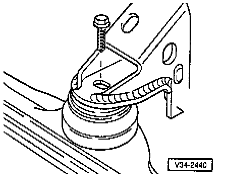
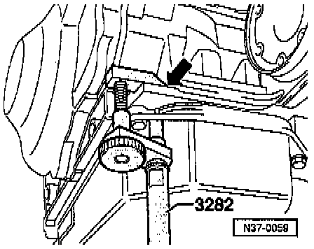
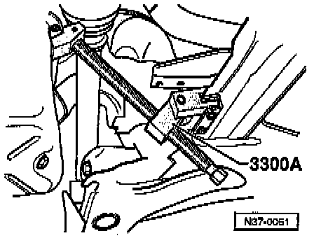

Transaxle Replace
TRANSMISSION, REMOVING and INSTALLING 01M TRANSMISSIONREMOVAL
- Obtain radio code on vehicles with coded radio.
- Disconnect Battery Grouping strap.
- Remove Battery on vehicles with 6-cylinder engines.
- Disconnect speedometer connector at transmission.
- Disconnect Vehicle Speed Sensor (VSS) connector .

- Remove electrical connections (arrows) at transmission.
- Remove wiring harness from retainer and place to side.

- Pull connector off Multi-function Transmission Range (TR) Switch.
- Remove Multi-function TR Switch on vehicles with 6-cylinder engine.
- Move selector lever to "P" and remove selector lever cable from lever/selector shaft.
- Remove selector lever cable anchorage circlip and remove selector lever cable.

- Clamp-off ATF cooler hoses with tool No. 3094, or equivalent, and disconnect at ATF cooler.

- Install support bar 10-222 A with legs 10-222 A/1 (6-cyl. engine adapter 10-222 A/3) and support engine/transmission in this position.

- Remove vacuum line -a- and connector -b- before inserting support bar into eye (arrow) on vehicles with 6-cylinder engines.
- Remove Starter.
- Remove bracket for power steering pressure hose.
- Pull connector off radiator fan motor on vehicles with 6-cylinder engine.

- Disconnect front mount from engine carrier.
- Remove mount.
- Remove coolant expansion tank and lay to one side.
- Remove left engine mount complete.
- Remove upper engine/transmission connecting bolts.
- Remove ATF oil pan protective plate.
Remove right-hand belt drive cover on vehicles with 6-cylinder engine.
- Remove torque converter cover plate and nuts from torque converter.
Remove vibration damping weight on vehicles with 6-cylinder engine.
- Disconnect drive shafts at flanges.
- Raise right drive shaft and secure.
- Remove left wheel.
- Turn steering to right lock.
- Mark installation position of ball joint bolts on left-hand control arm and remove bolts.

Vehicles with Plus running gear, remove bolts -A- and loosen bolts -B-
- Swing ball joint outward and move left-hand drive shaft to one side.
- Suspension; Repair group 40; Removing and installing drive shafts.

- Set up transmission support 3282.
The transmission support 3282 is set up with adjusting plate 3282/2 for removing automatic transmission 096 and 01 M.
The symbols on the adjusting plate indicate the mounts required.

- Move jack VAG 1383 A with transmission support 3282 under transmission and support.

- Place securing mount pin on sump and secure to transmission housing (arrow).
- Remove lower engine/transmission connecting bolts.

- Tilt engine and transmission forward with supporting device 3300 A.
- Press transmission off engine; when doing this, press torque converter out of drive plate.
- Press torque converter against ATF pump.
- Lower engine using support device spindle.
- Lower transmission slightly.
- Guide power steering pressure line past transmission.
- Tilt transmission using jack spindle and while lowering ensure cover (wheel housing side) is guided closely past wheel housing.
- Swivel transmission and carefully lower.
Ensure that the right joint flange does not contact the supporting device 3300 A and that the Multi-function TR Switch does not contact the subframe.
- Secure torque converter to prevent it falling out.
INSTALLATION
- Installation is performed in the reverse order.
- When installing the torque converter, ensure that both drive pins engage in the ATF pump inner wheel recesses.
Before installing, ensure that the dowel sleeves are correctly located.
When installing gearbox, observe torque converter contact impression on drive plate.
- Replace selector cable anchorage locking washer.
- Check selector lever cable adjustment, adjust if necessary.
- Tighten the following to:
Drive shaft to flange: 45 Nm (37 ft lb)
Torque converter to drive plate: 60 Nm (44 ft lb)
Transmission to engine bolt (12 mm): 60 Nm (44 ft lb)
Transmission to engine bolt (10 mm): 80 Nm (59 ft lb)
Front mount to assembly: 60 Nm (44 ft lb)
Left mount to assembly: 60 Nm (44 ft lb)
Left mount to transmission: 25 Nm (18 ft lb)
Cover plate to transmission: 15 Nm (11 ft lb)
Ball joint to control arm: 35 Nm (26 ft lb)
Starter to transmission: 60 Nm (44 ft lb)